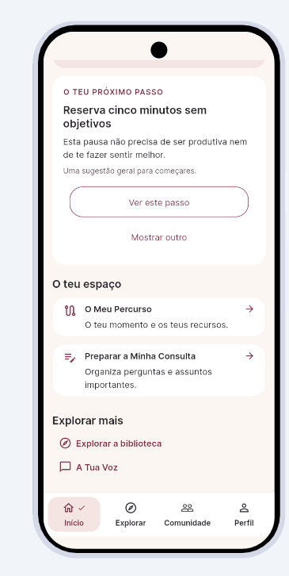
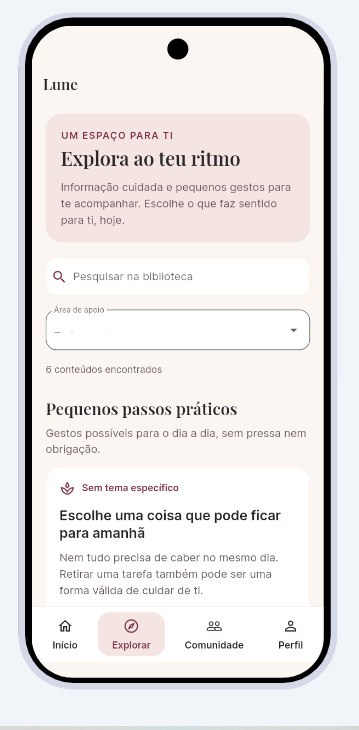
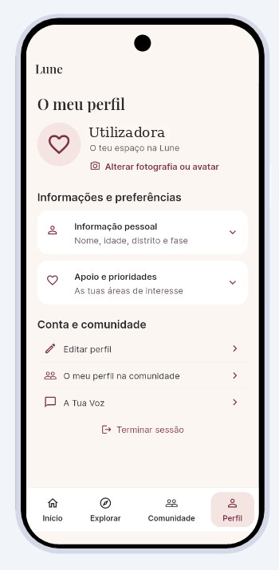
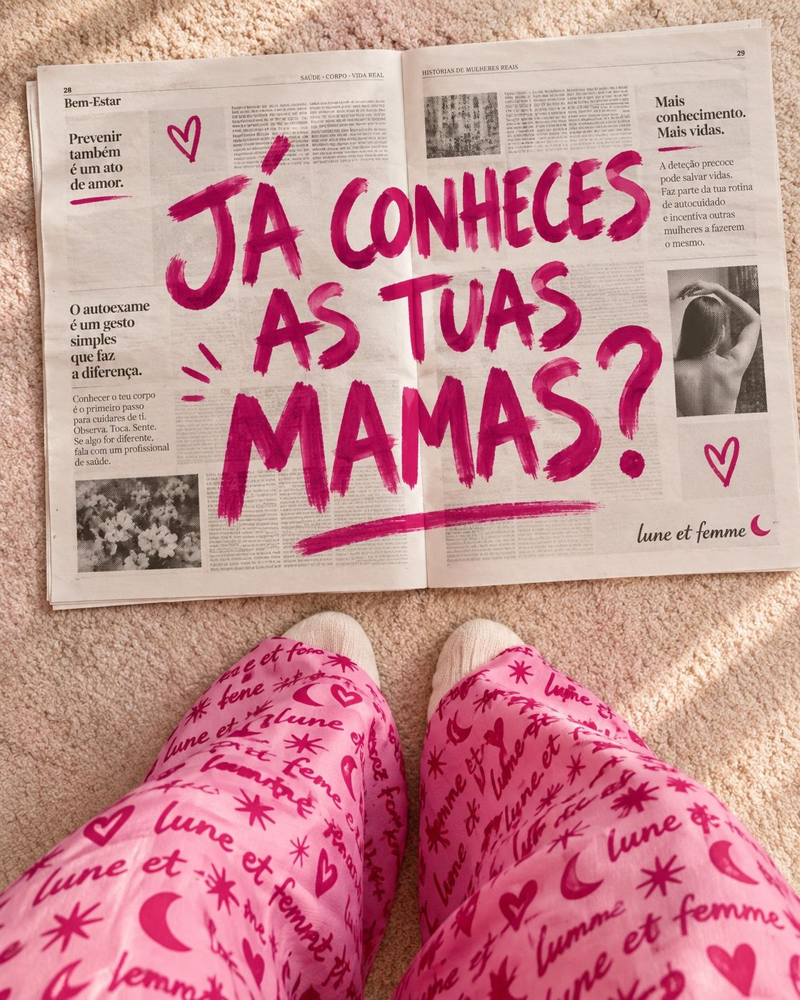
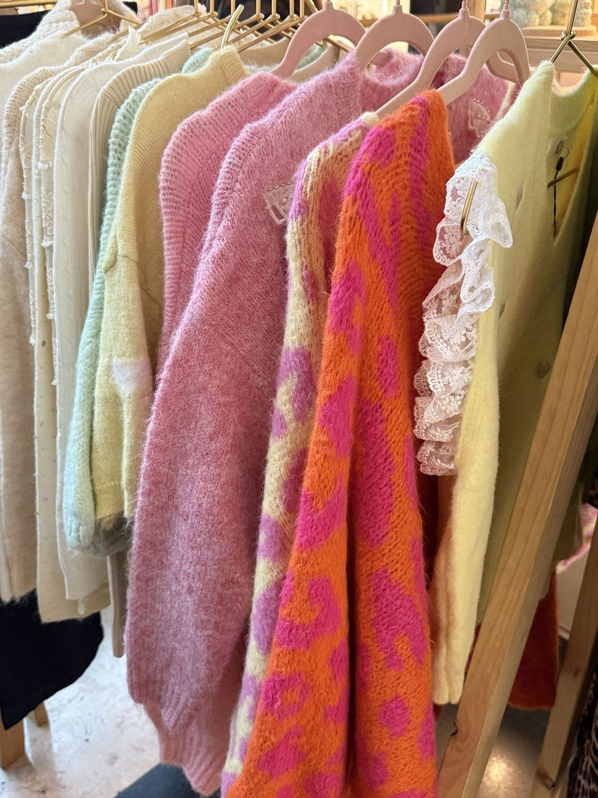
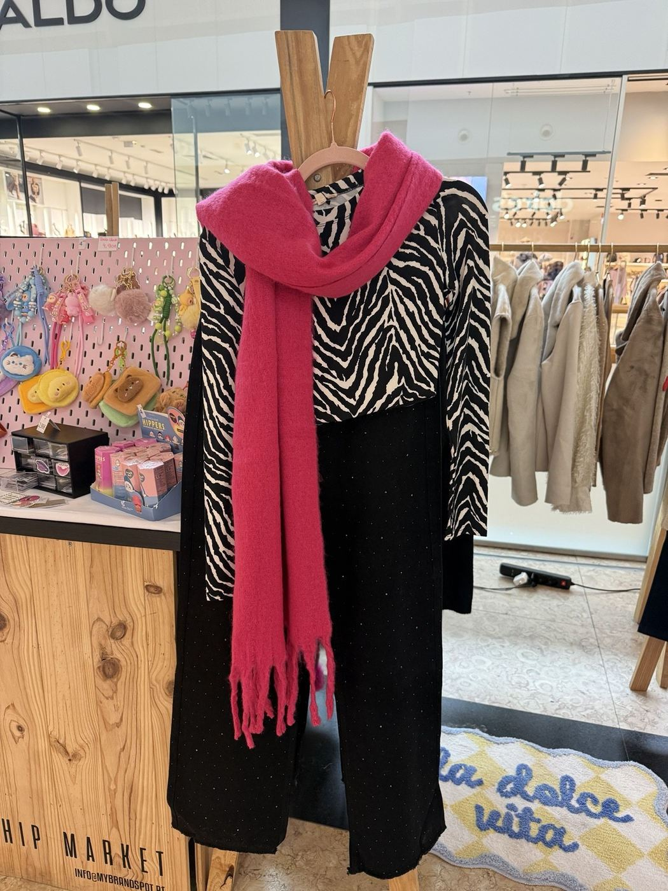
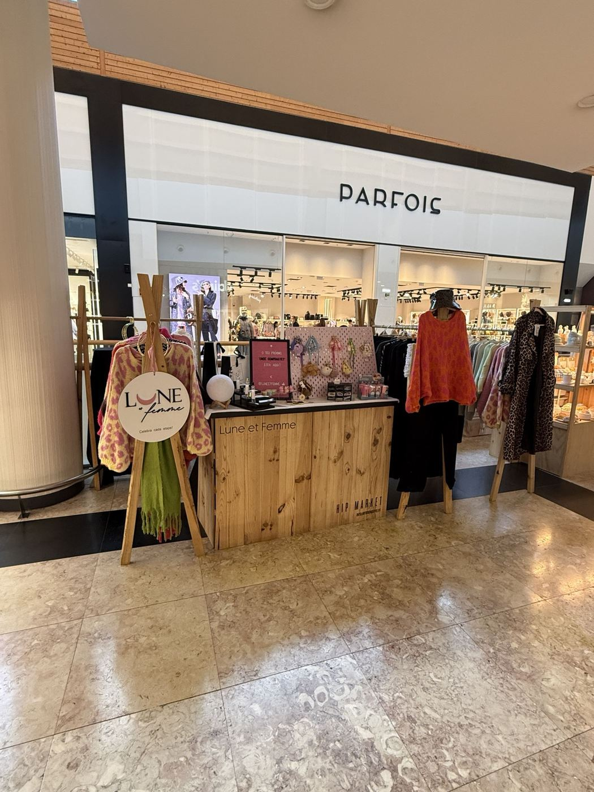

«E se voltar a acontecer?»
O medo da recidiva merece ser compreendido, não escondido.
A Lune nasce para dar espaço às perguntas, mudanças e emoções que continuam depois dos tratamentos. Estamos a criar uma aplicação com conteúdos por temas, uma experiência adaptada à tua fase e a possibilidade de participares na sua construção.
Inscrição gratuita · Acesso sujeito a convite
O tratamento termina.
O que sentesUm projeto feito com escuta, um passo de cada vez.
Há dias de coragem. Há dias de medo. Todos merecem ser acolhidos.
Escuta · Proximidade · RespeitoAntes de construir a Lune, começámos por escutar quem conhece esta realidade de dentro.
Dados do questionário de validação do projeto Lune. São perceções das participantes, não resultados clínicos.
Pode haver alívio e medo ao mesmo tempo. O corpo pode parecer diferente. A energia pode não voltar quando esperavas. E, às vezes, o mais difícil é explicar tudo isto a quem está à tua volta.
O medo da recidiva merece ser compreendido, não escondido.
O corpo, a identidade e o tempo de recuperação também precisam de espaço.
Nem todas as marcas do cancro são visíveis. O apoio não devia terminar na última sessão.
A Lune nasceu de uma experiência vivida na primeira pessoa e de uma pergunta que muitas mulheres conhecem: quando os tratamentos acabam, onde encontramos apoio para aquilo que continua?
Estamos a construir a resposta que gostaríamos de ter encontrado — ouvindo outras mulheres e avançando passo a passo, sem prometer o que ainda não existe.
«Não tens de voltar a ser quem eras para merecer apoio hoje.»Uma aplicação construída com escuta, respeito e espaço para cada história.
Não prometemos resolver tudo. Estamos a criar ferramentas simples para tornar alguns dias menos confusos.
Fadiga, medo da recidiva, identidade, direitos e regresso ao trabalho — organizados para não teres de pesquisar tudo sozinha. A biblioteca está em construção.
Indicas a fase em que estás e a página inicial adapta a apresentação dos conteúdos. Esta personalização já existe no protótipo.
Na Beta, podes dizer-nos o que funciona, o que falta e o que gostarias de encontrar. A tua experiência ajuda a orientar as próximas versões.
Estes ecrãs são capturas do protótipo em desenvolvimento. Algumas funcionalidades podem mudar durante a Beta.



Queremos que saibas o que o protótipo já inclui — e o que faz parte da visão para as próximas versões.
Conta e perfil de utilizadora, página inicial adaptada à fase indicada e estrutura de conteúdos em desenvolvimento.
Ferramentas de bem-estar emocional, espaços de comunidade e novas experiências com profissionais. Ainda não estão disponíveis na Beta.
A Lune não substitui acompanhamento médico ou psicológico. As funcionalidades futuras dependem dos testes e recursos disponíveis.
lune et femme
A Lune et Femme é a marca de moda do Universo Lune. Peças com cor, personalidade e liberdade para seres quem és.
A atividade comercial da marca contribui para a sustentabilidade e o desenvolvimento da aplicação Lune. Comprar na loja não é fazer um donativo.
Queres apoiar o projeto de outra forma? Partilha a Lune ou participa na Beta.
Descobrir a Lune et Femme luneetfemme.com



É simples. Não precisas de preparar nada nem de ter experiência com aplicações.
Inscreves-te na lista de interesse para receber informações sobre a Beta.
Consoante as vagas disponíveis, enviamos um convite por email. A inscrição não garante acesso.
Se participares, experimentas a aplicação e podes ajudar-nos a perceber o que melhorar.
Queremos conhecer a tua perspetiva: o que gostarias de encontrar numa aplicação feita para mulheres no depois do cancro da mama? Candidata-te para poderes experimentar o protótipo e ajudar-nos a melhorá-lo.
A inscrição coloca-te na lista de interesse. Os convites são enviados conforme as vagas disponíveis.
O protótipo está em desenvolvimento e a Beta será aberta progressivamente por convite. A inscrição não dá acesso imediato.
Não. O acesso à fase Beta é gratuito para as participantes convidadas.
A Lune destina-se a mulheres adultas com experiência de cancro da mama, sobretudo durante a transição entre tratamentos, terapêuticas prolongadas e o período de recuperação.
O feedback ajuda-nos muito, mas queremos respeitar o teu tempo e a tua energia. Vamos criar oportunidades simples para partilhares o que achas.
Não. A Lune procura oferecer informação, orientação prática e, no futuro, comunidade. Não substitui diagnóstico, tratamento ou acompanhamento médico e psicológico.
É uma marca de moda ligada ao Universo Lune. A sua atividade comercial ajuda a apoiar o desenvolvimento da aplicação. A compra de peças não é um donativo.
Apoios institucionais do projeto